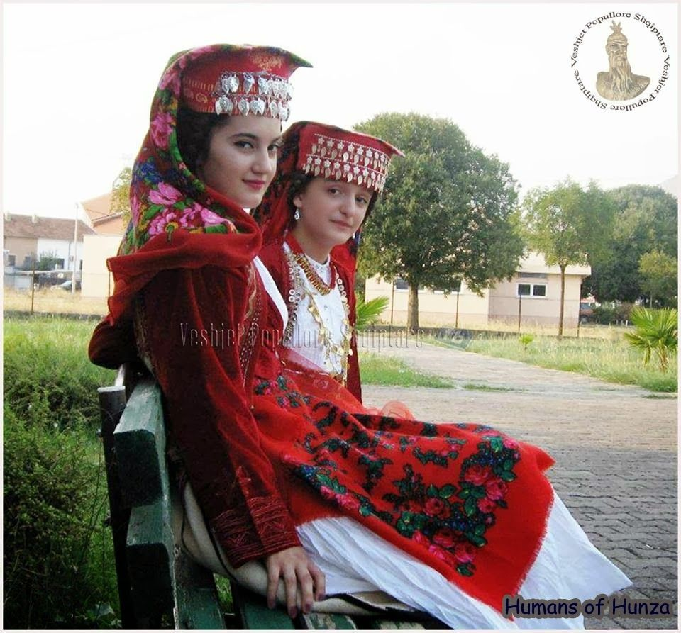
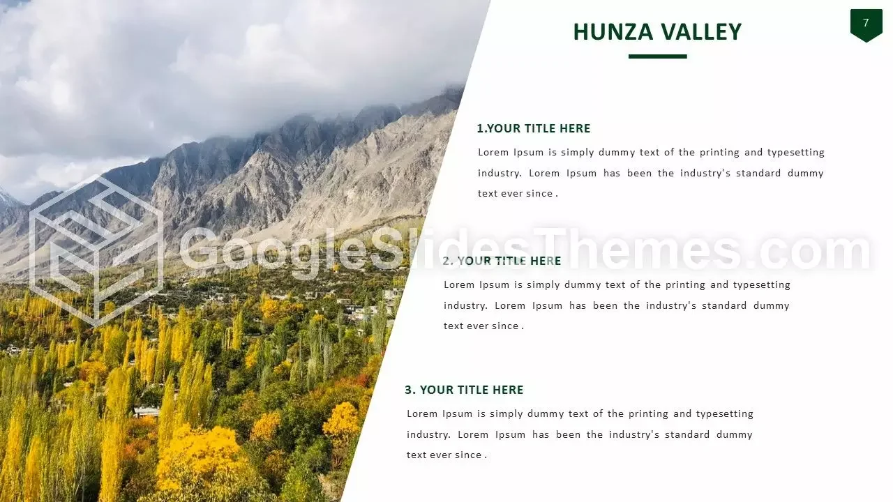

"Pre-historic men and animal figures are carved on rocks along the Valley.
Some lakes like Attabad Lake," Borith Lake, Shimshal Lakes,
Hassanabad Lake are located in Hunza.
Khunjerab Pass is a
4,693-meter-high mountain pass in the Karakoram Mountains.
Pre-historic men and animal figures are carved on rocks along the valley.
First and foremost is the view of Rakaposhi. The immense mountain of Rakaposhi is everywhere, no matter what part of Hunza you are staying Moreover, the mountain is a part of the Karakoram Mountain Range and is 7,788 meters high. A lake (from Latin lacus) is a large body of water (larger and deeper than a pond) within
They became fascinating case studies of the unique region in which they live. The Hunza Valley is a fertile valley that supports agriculture and provides isolation from the rest of the world, and it's also located at a very high altitude.
My favorite place essay ,Every human being in the world has a favorite place to go where his captivity feels comfortable and safe. A place to go in times of grief. A place where he sheds his concerns or a place that may remind you of beautiful memories and you love sitting in it to remember those moments.